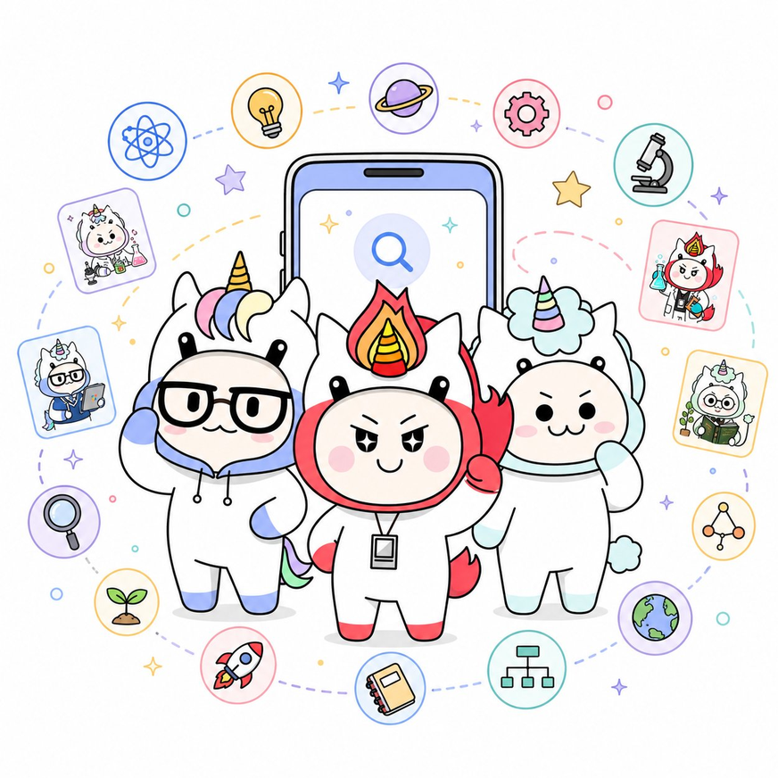

부담 없는 5분
16개의 짧고 직관적인 질문으로 구성되어, 수업 흐름을 끊지 않고 가볍게 시작할 수 있습니다.
16개의 가벼운 질문으로 학생 한 명 한 명에게 닮은 '탐구 위인'을 찾아주는 진로 탐구 아이스브레이킹 게임입니다. 교실의 긴장을 풀고, 탐구의 첫 호기심을 여는 도입 활동으로 활용하세요.

…그 외 폰 노이만, 닐스 보어, 파인만, 멘델, 에디슨, 장영실 등 총 16명의 탐구 위인이 기다리고 있습니다.
본 수업 전, 학생들이 각자 휴대폰·태블릿으로 테스트를 진행합니다. 별도 설치나 로그인 없이 링크 하나로 바로 시작됩니다.
나온 탐구 위인을 짝·모둠과 비교합니다. "나는 왜 이 위인일까?"를 이야기하며 자연스럽게 서로를 소개하고 긴장을 풉니다.
위인의 탐구 방식을 그날의 수업 주제와 이어 줍니다. 진로·탐구 활동의 동기를 자연스럽게 끌어올리는 다리가 됩니다.
16개의 짧고 직관적인 질문으로 구성되어, 수업 흐름을 끊지 않고 가볍게 시작할 수 있습니다.
링크 하나로 바로 실행됩니다. 학생 1인 1디바이스와 인터넷 환경만 있으면 충분합니다.
단순한 재미를 넘어, 실제 탐구 위인의 사고방식을 만나며 진로·탐구 동기로 연결됩니다.
강의 시작 전, 학생들과 함께 5분이면 충분합니다.
테스트 시작하기 →